【一般使用物品】
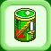 對武器使用後可降低裝備時所要求的等級，隨著使用者的運氣值最高可降 6 至 10 個等級，但是使用時會有機率導致武器損壞。使用對象：劍、刀、斧、棒、拳套、鞭、算盤。 | 對防具使用後可降低裝備時所要求的等級，隨著使用者的運氣值最高可降6至10個等級，但是使用時會有機率導致防具損壞。使用對象：盾牌、衣袍、皮甲、盔甲、頭盔、帽類、手套、鞋類、項鍊、戒子、書籍、樂器。 | 具有魔力的豆子，吃下後可降低目前升級所需經驗值的 15%，角色等級必須超過 100 級以上，才可以使用。 | 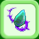 具有魔力的豆子，吃下後可降低目前升級所需經驗值的 10%，角色等級必須超過 100 級以上，才可以使用。 | 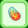 具有魔力的豆子，吃下後可降低目前升級所需經驗值的 5%，角色等級必須超過 100 級以上，才可以使用。 | 讓寵物降級後可以額外增加比咖啡更多的屬性數值 | 搭配寶石控制單一所求屬性降等，幻獸降後一等單一所求屬性數值:(幻獸等級/5)+(單一所求屬性數值/5)+10=降後幻獸一級單一所求屬性數值 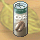 讓寵物降級後可以額外增加比果汁更多的屬性數值 | 搭配寶石控制單一所求屬性降等，幻獸降後一等單一所求屬性數值:(幻獸等級/6)+(單一所求屬性數值/6)+8=降後幻獸一級單一所求屬性數值 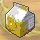 讓寵物降級後可以額外增加比牛奶更多的屬性數值 | 搭配寶石控制單一所求屬性降等，幻獸降後一等單一所求屬性數值:(幻獸等級/8)+(單一所求屬性數值/8)+6=降後幻獸一級單一所求屬性數值 讓寵物降級後可以額外增加更多的屬性數值 | 搭配寶石控制單一所求屬性降等，幻獸降後一等單一所求屬性數值:(幻獸等級/10)+(單一所求屬性數值/10)+4=降後幻獸一級單一所求屬性數值 不可思議的種子，可以讓升級所需經驗值減少 1/3 ，等級越高的人使用越有成效。 | 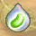 不可思議的種子，吞到肚子裡去可以增加 200000 點經驗值 ，質地堅硬請勿咀嚼 | 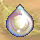 不可思議的種子，吞到肚子裡去可以增加 150000 點經驗值 ，質地堅硬請勿咀嚼 | 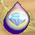 不可思議的種子，吞到肚子裡去可以增加 100000 點經驗值 ，質地堅硬請勿咀嚼 | 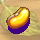 不可思議的種子，吞到肚子裡去可以增加 50000 點經驗值 ，質地堅硬請勿咀嚼 | 不可思議的種子，吞到肚子裡去可以增加 30000 點經驗值 ，質地堅硬請勿咀嚼 | 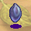 不可思議的種子，吞到肚子裡去可以增加 10000 點經驗值 ，質地堅硬請勿咀嚼 | 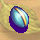 不可思議的種子，吞到肚子裡去可以增加 5000 點經驗值 ，質地堅硬請勿咀嚼 | 限大老板專用，可在任意的地點擺攤，但在室內地圖、特殊區域、以及不可傳送的區域不能擺攤。一個流動展示架只能使用一次 | 只有大老闆才能向巴格達城 ( 27,160 ) 的奧姆蘭購買，一個展示架10000可因，一次買五個有九五折優惠。( 真少... )
| 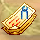 可憑券到金銀城雜貨店找合成師傅，將身上所有的同種指定的有耐用度的工具、娃娃或是消耗品，累計其耐用度壓縮成一個。每張只能使用一次 | 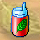 只有 二轉商人 - 大老闆 才能向彩虹城旅人工會的貿易商博斯購買 |
解毒劑原價 : 800 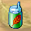 (不包含見習修士) 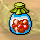 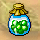 (不包含見習修士) 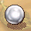 ( 75000 coin ) 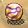 可用來封印 1 - 120 級的幻獸，封印後幻獸等級會自動減少一半，這樣就不會有等太高無法開封的問題 | 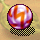 可用來封印 1 - 120 級的幻獸，封印 100 級以上幻獸會自動降為 100 級能力，封印 100 級以下幻獸不降級 | 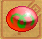 可用來封印 1 - 140 級的幻獸，封印 100 級以上幻獸會自動降為 100 級能力，封印 100 級以下幻獸不降級 | 可用來封印 1 - 160 級的幻獸，封印 100 級以上幻獸會自動降為 100 級能力，封印 100 級以下幻獸不降級 | 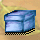 |